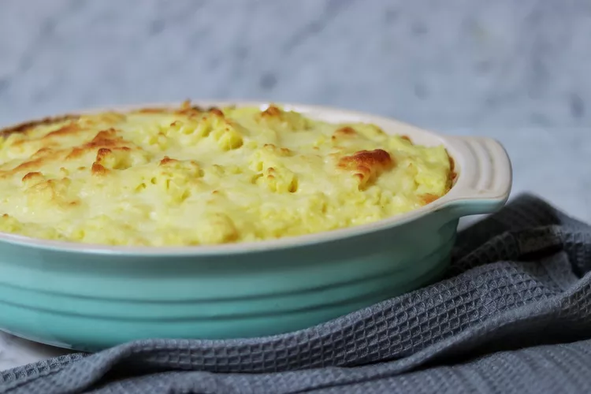

Shepherds Pie

Shepherd's Pie recipes are traditionally done with lamb,
but are great with any ground meat--turkey and beef being the most popular
modern versions. Give this great casserole a try, and watch everyone flock to the table.
Ingredients
- 1 ¼ pounds Yukon Gold potatoes, peeled and cubed
- 3 cloves garlic, halved
- 1 pound lean ground beef
- 2 tablespoons flour
- ¾ cup beef broth
- 3 tablespoons ketchup
- 4 cups frozen mixed vegetables
- ½ teaspoon black pepper
- ½ cup shredded Cheddar cheese, divided
- ¾ cup light sour cream
- 1 teaspoon salt